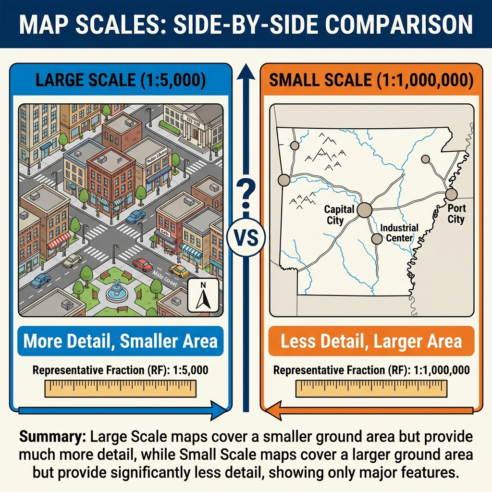

📢 The Cartographic Communication Channel
Cartography is the process of encoding geographic reality into an abstract graphic language. The user's job is to decode those symbols to build their own mental model of the world.
The Essential T.O.L.S. (TALLS)
Every professional map should contain these five key elements. Without them, a map is just an illustration.
- T - Title: Clear, concise, and tells the "What, Where, and When."
- O - Orientation: A north arrow or graticule (especially for large scales).
- L - Legend: The key that unlocks the meaning of every color and symbol.
-
S - Scale: A way to measure distance (Scale Bar is best for digital).

Visualizing Scale: Large Scale = Small Area (Detailed). Small Scale = Large Area (General).
- S - Source: Where did the data come from? (e.g., "Source: NOAA").
Levels of Measurement
Before choosing a color scheme, you must understand your data's structure. In 1946, psychologist Stanley Smith Stevens defined four levels of measurement that dictate how we can map data:
Examples: Soil types, Place names, Phone numbers (961-8224 is not "more" than 961-8049).
Map Choice: Qualitative colors (e.g., Land Use).
Examples: Race results (1st, 2nd, 3rd), High/Medium/Low, Likert scales.
Map Choice: Sequential colors or size (e.g., Hazard Risk).
Examples: Temperature in Celsius (0°C is not "no heat"), Time of day.
Map Choice: Diverging or Sequential colors.
Examples: Population density, Distance, Income ($0 means no income).
Map Choice: Sequential colors or Proportional Symbols.
Interactive: The Power of Classification
Changing how you group data (Classification) can drastically change the story a map tells. This is often how maps "lie."
Below is a grid of 20 districts with unemployment rates ranging from 2% to 12%. Click the buttons to change the classification method.
The Psychology of Color
Color is one of the most powerful tools in a cartographer's belt, but it must be used with precision based on your data's level of measurement.
Sequential (Low to High)
Used for quantitative data that goes in one direction (e.g., Income, Population).
Diverging (Opposite Ends)
Used for data with a meaningful midpoint (e.g., Above/Below Average, Temperature).
Qualitative (Categories)
Used for categorical data with no order (e.g., Soil Types, Land Use).
Common Thematic Map Types
Depending on your data's geometry (points, lines, polygons) and measurement level, you can choose from these standard map types:
1. Choropleth Map
Polygons shaded by value (e.g., Population Density per County). Requires normalized data (rates/ratios), not raw counts.
2. Proportional Symbol
Circles or squares scaled by magnitude (e.g., City Population). Good for raw counts.
3. Isoline (Contour)
Continuous lines connecting points of equal value (e.g., Elevation or Temperature). Best for continuous fields.
4. Dot Density
Dots randomly placed within polygons to show density (e.g., 1 dot = 500 people). Excellent for showing concentration.
Summary of Big Ideas
- Visual Hierarchy guides the user's eye to the most important data.
- TALLS elements provide the necessary context for map interpretation.
- Choropleth maps must be normalized to avoid misleading population-concentration artifacts.
- Generalization is the necessary simplification of geography for specific scales.
Chapter 02 Checkpoint
1. Which color scheme would you use to map "Percent Unemployment by County"?
2. What does "TALLS" stand for in map design?